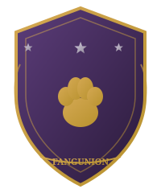
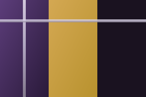

Союз Клыков — каждый символ несёт смысл и историю стаи.

Фиолетовый щит — это мудрость стаи, её глубинная суть. Он — гарант того, что каждый член Союза будет защищён и услышан.
Три серебряные звезды на щите — верность, творчество и свобода, три драгоценные производные мудрости, которые ведут нас вперёд.
Перекрещённые клык и коготь в центре — сила и единство всех видов, от волка до дракона. Белый клык — верность и хватка. Чёрный коготь — решимость и острота ума. Вместе они непобедимы.
Золотое окаймление щита — ценность всего, что хранится внутри: творчества, дружбы, каждого голоса и каждого хвоста.

Государственное знамя — три вертикальные полосы: фиолетовая, золотая и чёрная. Фиолетовый — мудрость стаи. Золотой — ценность каждого члена. Чёрный — глубина духа и решимость.
Серебристый скандинавский крест — символ единства. Его вертикаль делит фиолетовую мудрость пополам, напоминая: в жилах каждого члена стаи течёт одна кровь. Горизонталь скрещивает все пути и объединяет все голоса — в один Союз Клыков.
Мы — Союз Клыков, мы — семья творцов,
Лапы, крылья, хвосты и сиянье лиц.
Здесь не трофей, не оскал бойцов —
Кисть, перо и резец без границ.
Каждый клык — это знак, не для битв, не для ран,
Это голос и след на холсте.
Здесь никто не забыт, каждый зверь — талисман,
Каждый ценен в своей красоте.
Кот-поэт заплетает строфу в венок,
Волк-скульптор гранит оживит теплом,
И дракон-музыкант, как живой поток,
Свяжет души серебряным ремеслом.
Каждый клык — это знак, не для битв, не для ран,
Это голос и след на холсте.
Здесь никто не забыт, каждый зверь — талисман,
Каждый ценен в своей красоте.
Кто бы ты ни был: лис, дракон или рысь,
Твой талант — это свет. Улыбнись!
Каждый клык — это знак, не для битв, не для ран,
Это голос и след на холсте.
Добровольный Союз, наш пушистый клан,
Каждый ценен в своей красоте!